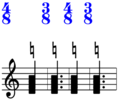
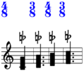
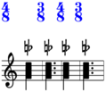
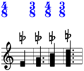
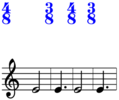

ClusterCommand¶
-
class
baca.ClusterCommand.ClusterCommand(hide_flat_markup=None, selector='baca.plts()', start_pitch=None, widths=None)¶ Cluster command.
With music-maker:
>>> music_maker = baca.MusicMaker(baca.clusters([3, 4]))
>>> collections = [[0, 2, 10], [18, 16, 15, 20, 19], [9]] >>> contribution = music_maker('Voice 1', collections) >>> lilypond_file = music_maker.show(contribution) >>> abjad.show(lilypond_file, strict=89)

In tuplet 1:
>>> music_maker = baca.MusicMaker( ... baca.clusters( ... [3, 4], ... selector=baca.tuplets()[1:2].plts().group(), ... ), ... )
>>> collections = [[0, 2, 10], [18, 16, 15, 20, 19], [9]] >>> contribution = music_maker('Voice 1', collections) >>> lilypond_file = music_maker.show(contribution) >>> abjad.show(lilypond_file, strict=89)
PLT -1:
>>> music_maker = baca.MusicMaker( ... baca.clusters([3, 4], selector=baca.plt(-1)), ... )
>>> collections = [[0, 2, 10], [18, 16, 15, 20, 19], [9]] >>> contribution = music_maker('Voice 1', collections) >>> lilypond_file = music_maker.show(contribution) >>> abjad.show(lilypond_file, strict=89)
With segment-maker:
>>> maker = baca.SegmentMaker( ... score_template=baca.SingleStaffScoreTemplate(), ... time_signatures=[(4, 8), (3, 8), (4, 8), (3, 8)], ... )
>>> maker( ... 'MusicVoice', ... baca.clusters([3, 4], start_pitch='E4'), ... baca.make_notes(repeat_ties=True), ... )
>>> lilypond_file = maker.run(environment='docs') >>> abjad.show(lilypond_file, strict=89)
Special methods
-
__call__(argument=None)¶ Calls command on argument.
Returns none.
-
(AbjadObject).__format__(format_specification='')¶ Formats Abjad object.
Set format_specification to ‘’ or ‘storage’. Interprets ‘’ equal to ‘storage’.
Returns string.
-
(AbjadObject).__repr__()¶ Gets interpreter representation of Abjad object.
Returns string.
Methods
Read/write properties
-
(Command).offset_to_measure_number¶ Gets segment-maker offset-to-measure-number dictionary.
Return type: Optional[OrderedDict]
-
(Command).previous_segment_voice_metadata¶ Gets previous segment voice metadata.
Return type: Optional[OrderedDict]
Read-only properties
-
hide_flat_markup¶ Is true when cluster hides flat markup.
Hides flat markup:
>>> maker = baca.SegmentMaker( ... score_template=baca.SingleStaffScoreTemplate(), ... time_signatures=[(4, 8), (3, 8), (4, 8), (3, 8)], ... )
>>> maker( ... 'MusicVoice', ... baca.pitch('E4'), ... baca.make_notes(repeat_ties=True), ... baca.natural_clusters(widths=[3]), ... )
>>> lilypond_file = maker.run(environment='docs') >>> abjad.show(lilypond_file, strict=89)
Set to true, false or none.
Returns true, false or none.
-
selector¶ Selects PLTs.
>>> baca.clusters([3, 4]).selector baca.plts()
Returns selector.
-
start_pitch¶ Gets start pitch.
Takes start pitch from input notes:
>>> maker = baca.SegmentMaker( ... score_template=baca.SingleStaffScoreTemplate(), ... time_signatures=[(4, 8), (3, 8), (4, 8), (3, 8)], ... )
>>> maker( ... 'MusicVoice', ... baca.make_notes(repeat_ties=True), ... baca.pitches('C4 D4 E4 F4'), ... baca.clusters([3]), ... )
>>> lilypond_file = maker.run(environment='docs') >>> abjad.show(lilypond_file, strict=89)
Sets start pitch explicitly:
>>> maker = baca.SegmentMaker( ... score_template=baca.SingleStaffScoreTemplate(), ... time_signatures=[(4, 8), (3, 8), (4, 8), (3, 8)], ... )
>>> maker( ... 'MusicVoice', ... baca.make_notes(repeat_ties=True), ... baca.clusters([3], start_pitch='G4'), ... )
>>> lilypond_file = maker.run(environment='docs') >>> abjad.show(lilypond_file, strict=89)
Set to named pitch or none.
Returns named pitch or none.
Gets tags.
Return type: List[Tag]
-
widths¶ Gets widths.
Increasing widths:
>>> maker = baca.SegmentMaker( ... score_template=baca.SingleStaffScoreTemplate(), ... time_signatures=[(4, 8), (3, 8), (4, 8), (3, 8)], ... )
>>> maker( ... 'MusicVoice', ... baca.clusters([1, 2, 3, 4], start_pitch='E4'), ... baca.make_notes(repeat_ties=True), ... )
>>> lilypond_file = maker.run(environment='docs') >>> abjad.show(lilypond_file, strict=89)
Patterned widths:
>>> maker = baca.SegmentMaker( ... score_template=baca.SingleStaffScoreTemplate(), ... time_signatures=[(4, 8), (3, 8), (4, 8), (3, 8)], ... )
>>> maker( ... 'MusicVoice', ... baca.clusters([1, 3], start_pitch='E4'), ... baca.make_notes(repeat_ties=True), ... )
>>> lilypond_file = maker.run(environment='docs') >>> abjad.show(lilypond_file, strict=89)

Leaves notes and chords unchanged:
>>> maker = baca.SegmentMaker( ... score_template=baca.SingleStaffScoreTemplate(), ... time_signatures=[(4, 8), (3, 8), (4, 8), (3, 8)], ... )
>>> maker( ... 'MusicVoice', ... baca.make_notes(repeat_ties=True), ... baca.pitch('E4'), ... baca.clusters([]), ... )
>>> lilypond_file = maker.run(environment='docs') >>> abjad.show(lilypond_file, strict=89)
Inteprets positive integers as widths in thirds.
Interprets zero to mean input note or chord is left unchanged.
Set to nonnegative integers or none.
Returns nonnegative integers or none.
-